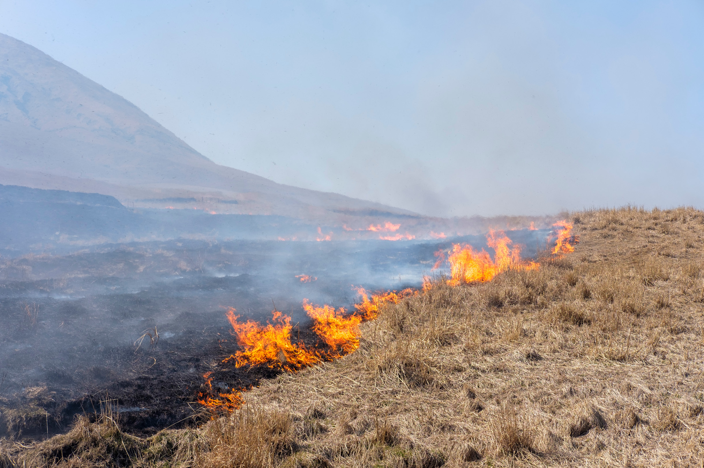

阿蘇の草原は、約一万三千年前に生まれ、
野焼き、放牧、採草によって、
千年以上、人の手で守られてきた世界でも稀な風景です。
三協畜産のあか牛は、この大地と清らかな水のもと、
二十八〜三十ヶ月を静かに過ごします。
今、その営みを繋ぐ者は、静かに減り続けています。
The Land
野焼きが守る、
世界でも稀な草原。
阿蘇の草原は、人が手を入れることで初めて維持される景観です。毎年春、枯れた草を焼き払う「野焼き」は、ただの農作業ではありません。千年以上続いてきた、人と自然のせめぎ合いの記録です。
煙が晴れた後の黒い大地に、やがて柔らかな緑が戻る。あか牛たちはその草を食み、また大地を踏み固める。野焼きなしには草原はなく、草原なしにはあか牛もいない。この循環が、阿蘇の食を支えています。

阿蘇の野焼き ／ 熊本県阿蘇郡
The Cattle
大地と水のもとで、
静かに育つ。
三協畜産のあか牛は、阿蘇の清らかな水と広大な牧草地で、二十八〜三十ヶ月をかけてゆっくりと育てられます。効率を求めることよりも、自然のリズムに従うこと。その姿勢が、肉質のやわらかさと深い旨みに表れます。
赤みがかった被毛に、がっしりとした体躯。あか牛（褐毛和種）は日本古来の品種で、霜降りよりも赤身の旨みが特徴です。脂が少なく食べやすい。それでいて、噛むほどに味が出る。
「牛を育てることは、草原を守ることだと思っています。
野焼きをやめたら、あか牛も終わる。」

三協畜産のあか牛 ／ 熊本県阿蘇郡
The Journey
食べることで、
関わることができる。
野焼きを担う農家の数は、ここ数十年で大きく減りました。高齢化と後継者不足。草原を維持するための費用と労力は、想像以上に重い。そして、知られていない。
「自然を食す。」は、その現場に行くプログラムです。牧場を訪れ、生産者の話を聞き、昼食に阿蘇の食材をいただく。8名の少人数で、静かに回る。記事を読んでここまで来た人だけが、参加できます。
Producer
三協畜産
Sankyo Chikusan — Aso, Kumamoto
Chef
瀬野 景介
ドゥエリーニュブリュス
Event Details
阿蘇 あか牛 — 旅の詳細
この記事を読んで、参加してみたいと思った方へ。
参加理由を添えて、ご連絡ください。